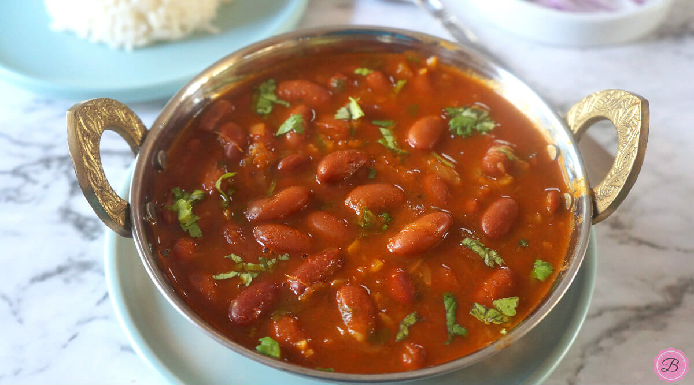

Rajma

Rājmā, also known as rajmah, rāzmā, or lal lobia, is a vegetarian dish, originating from the Indian
subcontinent, consisting of red kidney beans in a thick gravy with many Indian whole spices, and is usually
served with rice. It is a part of the regular diet in Northern India, Nepal and Punjab province of Pakistan
- Kidney Beans
- Tomato
- onions
- garlic and ginger
- Spices